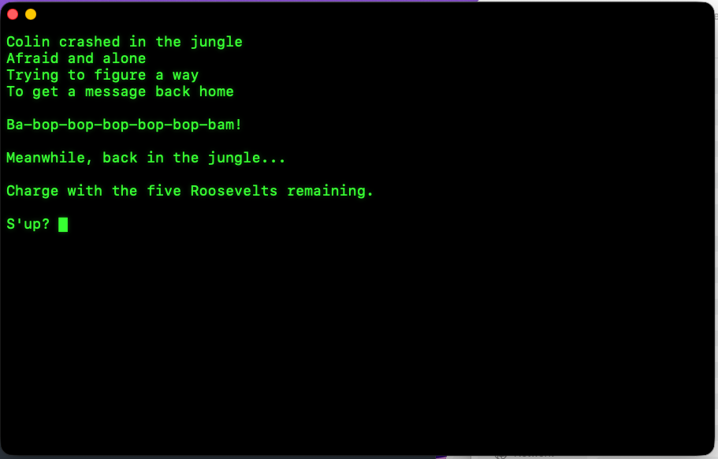
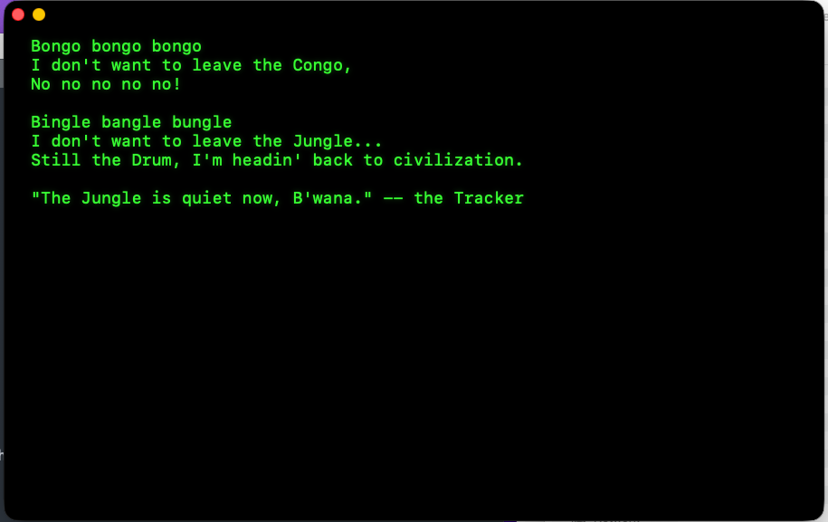

Have I lost my little mind? Maybe.

But if you are on the Jungle then you can download this app. It's macOS and runs on the latest version. There will be improvements. This is 1.2 (we bumped the version when we added another platform).
Download BongoVersion 1.3
Because sometimes you might want to stay out of your inbox and just go back in the Jungle. So now you have a Bongo to do it with. (There's an option to shift to the Princeton Graphics pale orange on black instead of green. You can make the font larger or smaller.)
There was a time when I first worked for Penn & Teller that Teller might send me a note and say, "I sometimes want to capture a Roosevelt and send it to someone with a comment. How would I do that?" And I would stay up for a few hours in the Bugg & Rudy office, the CNN News Hour loop going to keep me company, and write a bit of Turbo Pascal code to make the Capture command. That grabbed the last Roosevelt you read, put it at the top of a Bongo message and let you type the rest of your message before you sent it.
Those days are over.
But here is a link to the Android app that Chip and other ChromeBook people could use. I don't have a ChromeBook so I have no idea how well it works.
Just join the test at the Play Store to get access to the app. Let me know if you join and don't get a download link.
